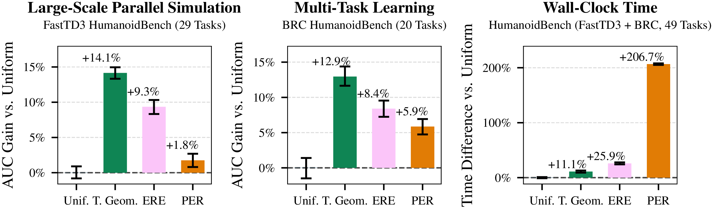
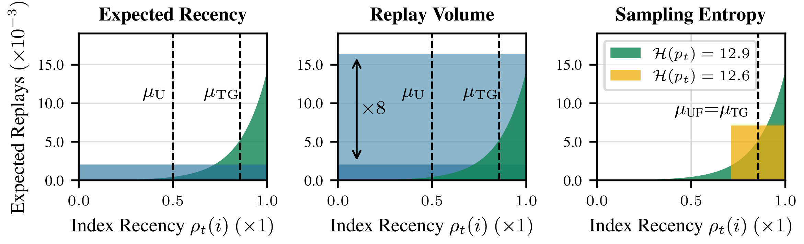
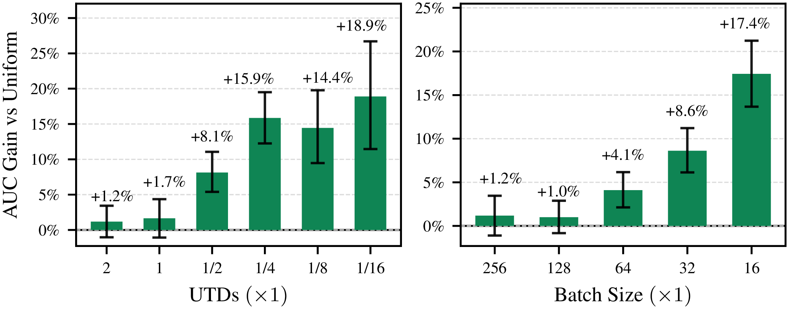
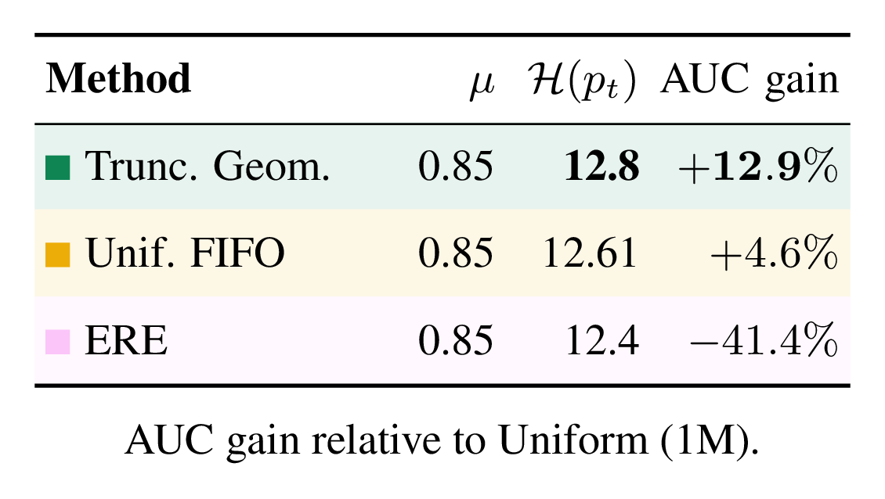
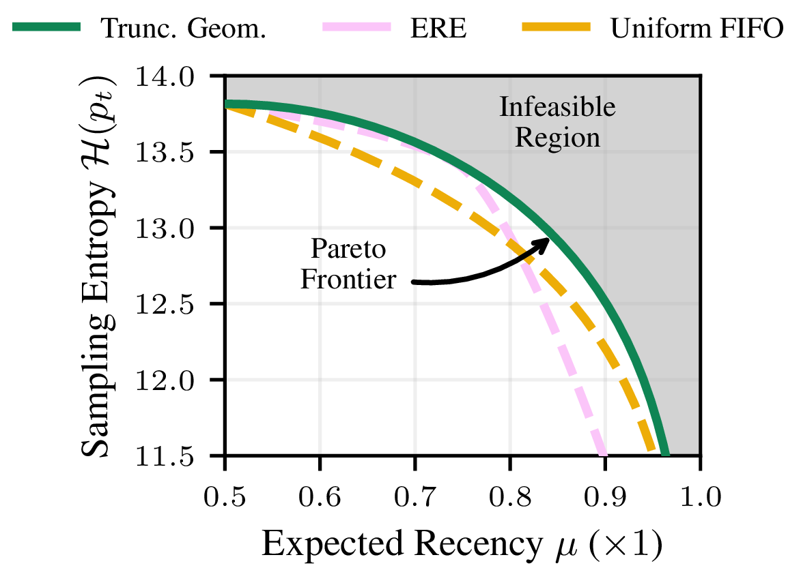
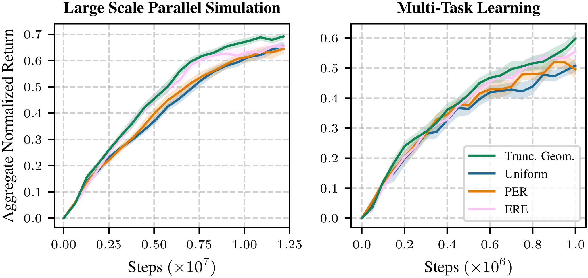

Abstract
Modern off-policy reinforcement learning algorithms often rely on simple uniform replay sampling, and it remains unclear when and why non-uniform replay improves over this strong baseline. Across diverse RL settings, we show that the effectiveness of non-uniform replay is governed by three factors: replay volume, the number of replayed transitions per environment step; expected recency, how recent sampled transitions are; and the entropy of the replay sampling distribution. Our main contribution is clarifying when non-uniform replay is beneficial and providing practical guidance for replay design in modern off-policy RL.
Namely, we find that non-uniform replay is most beneficial when replay volume is low, and that high-entropy sampling is important even at comparable expected recency. Motivated by these findings, we adopt a simple Truncated Geometric replay that biases sampling toward recent experience while preserving high entropy and incurring negligible computational overhead. Across large-scale parallel simulation, single-task, and multi-task settings, including four modern and classic algorithms evaluated on six RL benchmark suites, this replay sampling strategy improves sample efficiency in low-volume regimes while remaining competitive when replay volume is high.
Performance and runtime trade-offs
Recency-biased replay improves sample efficiency at negligible cost


Read more
Relative sample efficiency gains measured as area under the learning curve (AUC) for large-scale parallel simulation FastTD3 (left) and multi-task BRC (middle), and wall-clock time difference aggregated across both settings (right), compared to uniform sampling. Error bars show 95% stratified bootstrap CI. We report results in large-scale parallel FastTD3 and multi-task BRC because they feature relatively low experience reuse per transition, where non-uniform replay is expected to have the greatest impact.
Three axes of replay
Replay volume, expected recency and sampling entropy
Whether non-uniform replay helps is governed by three factors: replay volume (replayed transitions per environment step), expected recency (how recent the sampled transitions are) and sampling entropy (how spread out the sampling distribution is).


Read more
(Left) By biasing samples toward recent data, the Truncated Geometric sampler achieves substantially higher expected recency than uniform replay. (Middle) Increasing replay volume through UTD or batch size can make uniform replay match or exceed recency-biased sampling in the number of updates applied to recent transitions. (Right) Replay distributions can have the same expected recency but different sampling entropy. The Truncated Geometric sampler achieves recency through a smooth full-support bias, increasing sampling entropy relative to a uniform buffer with the same expected recency; this is comparable to increasing the uniform sampling buffer size by roughly one third.
Replay volume matters
Non-uniform replay helps most when replay volume is low


Read more
Improvement of recency-biased sampling over uniform replay as replay volume is varied through UTD (left) and batch size (right). In both panels, reducing replay volume increases the advantage of recency-biased replay: when replay volume is high, both methods perform similarly, whereas when replay volume is low, recency-biased sampling yields substantially larger gains. As such, the sampling distribution is especially important in optimization-limited regimes, such as multi-task learning or large-scale parallel simulation. PER follows a similar trend.
Sampling entropy matters
Expected recency alone is not enough
At matched expected recency (μ ≈ 0.85), performance tracks sampling entropy: Truncated Geometric, which has the highest entropy, performs best, while ERE, which has the lowest, falls below the uniform baseline.



Read more
ERE, Uniform FIFO (300k), and Truncated Geometric are matched to the same expected recency (μ ≈ 0.85), yet AUC gain relative to the Uniform (1M) baseline differs substantially with the sampling entropy. At this μ, ERE has the lowest entropy and falls below the Uniform baseline, while Truncated Geometric, which has the highest entropy, performs best. Interestingly, Uniform FIFO (300k) also outperforms the larger Uniform baseline despite using a smaller buffer. The plot shows the maximum-entropy frontier for a 1M buffer: among all discrete replay sampling distributions with fixed expected recency, the Truncated Geometric distribution achieves the highest possible sampling entropy. The shaded region above the curve is infeasible. ERE and Uniform FIFO trace lower-entropy tradeoffs across hyperparameter settings, so they obtain recency less efficiently than Truncated Geometric.
Final results
Truncated Geometric beats uniform, PER and ERE


Read more
Aggregate mean return across 29 HumanoidBench tasks trained in a parallel simulation setup with FastTD3 (left) and 20 HumanoidBench tasks trained in a multi-task setup with BRC (right). Shaded regions show 95% CIs. Truncated Geometric sampling significantly improves over uniform replay on both benchmarks and outperforms PER and ERE, despite FastTD3 and BRC already being strong optimized baselines. These gains come with negligible computational and complexity overhead relative to uniform sampling.
BibTeX
@misc{korniak2026doesnonuniformreplaymatter,
title = {When Does Non-Uniform Replay Matter in Reinforcement Learning?},
author = {Michal Korniak and
Mikołaj Czarnecki and
Yarden As and
Piotr Miłoś and
Pieter Abbeel and
Michal Nauman},
year = {2026},
eprint = {2605.10236},
archivePrefix = {arXiv},
primaryClass = {cs.LG},
url = {https://arxiv.org/abs/2605.10236}
}